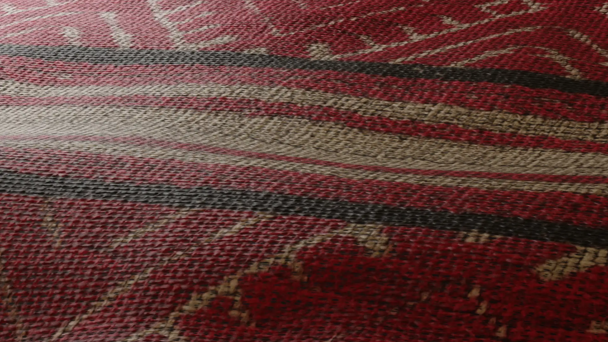
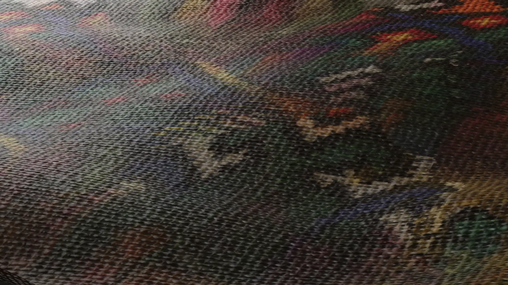
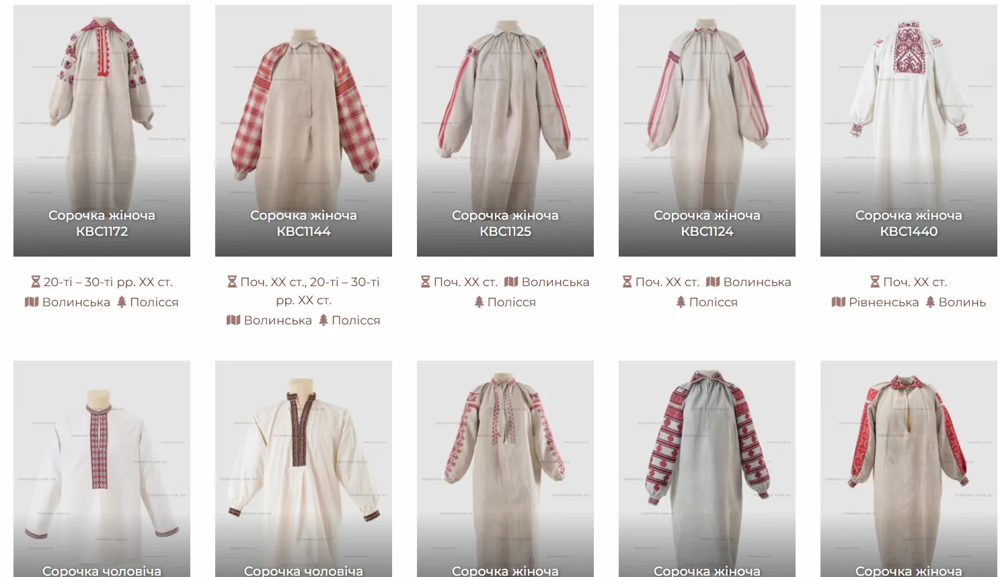
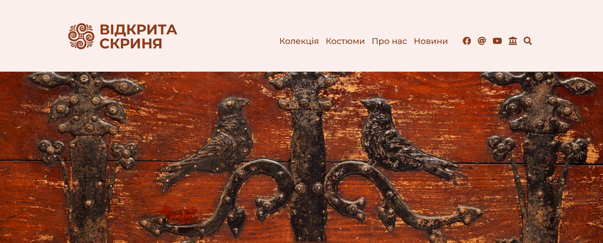
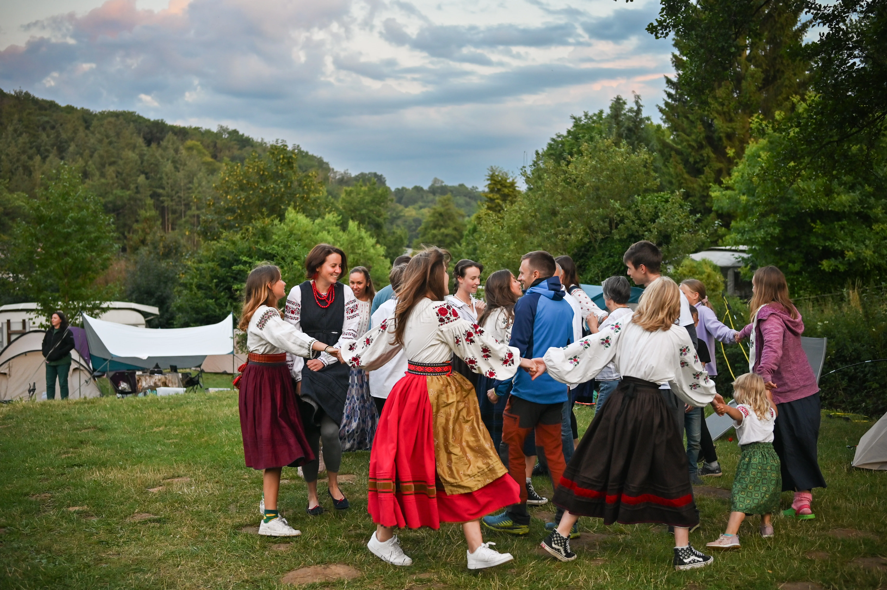

Sorochka Dance
This is a 3D video work inspired by the sleeves of Ukrainian embroidered shirts. The project conveys the movement and dance of culture and fabric, with patterns that shimmer, showcasing different embroidery styles from various regions of Ukraine. The project was created with the support of the "Vidkryta Skrynia" archive, thanks to their photographs of these beautiful sleeves, which made this project possible.





